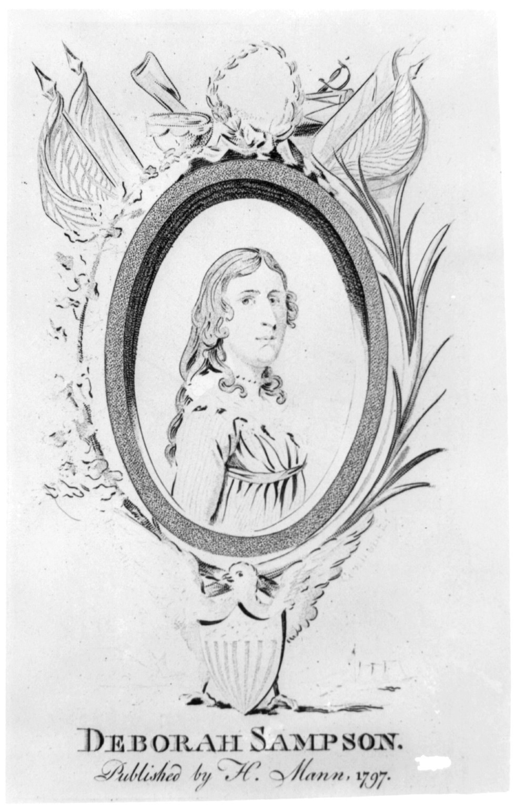

Directions: Work through the five stations in order. Each station holds one record of the war as someone besides a general lived it. For each record, state what the war offered its makers and what it cost them. You will build the full file in Part 2 and judge the records from it.
Source: John Murray, Earl of Dunmore, Lord Dunmore's Proclamation, November 7, 1775. Text quoted verbatim from the audited TPSP record dunmore-proclamation-1775; the edition named in that record is the Pennsylvania Journal printing of December 6, 1775, by way of the Gilder Lehrman Institute. Cuts are marked with ellipses.
"I have thought fit to issue this my proclamation, hereby declaring, that until the aforesaid good purposes can be obtained, I do, in virtue of the power and authority to me given, by his Majesty, determine to execute martial law, and cause the same to be executed throughout this colony; and to the end that peace and good order may the sooner be restored, I do require every person capable of bearing arms to resort to his Majesty's STANDARD, or be looked upon as traitors to his Majesty's crown and government, and thereby become liable to the penalty the law inflicts upon such offences, such as forfeiture of life, confiscation of lands, &c. &c. . . ."
"And I do hereby farther declare all indented servants, Negroes, or others (appertaining to rebels) free, that are able and willing to bear arms, they joining his Majesty's troops, as soon as may be, for the more speedily reducing this Colony to a proper sense of their duty, to his Majesty's crown and dignity. . . ."
"Given on board the ship William, off Norfolk, the 7th of Nov."
File entries. Who is offered freedom, on what conditions, and who is left out? Name the two conditions in the proclamation's own words, and the two groups the offer does not reach: enslaved people held by Loyalists, and people unable to bear arms.
Dunmore signs from a ship, driven from his capital, and pairs the offer of freedom with martial law and forfeiture for traitors. Explain what he needed in November 1775, and what his offer risked doing to slaveholding Virginians who had not yet chosen independence.
Source: Abigail Adams, letter to John Adams, March 31, 1776. Text quoted verbatim from the audited TPSP record abigail-adams-remember-the-ladies; the edition named in that record is the Massachusetts Historical Society, Adams Family Papers. Original spelling preserved. Cuts are marked with ellipses.
"I long to hear that you have declared an independency -- and by the way in the new Code of Laws which I suppose it will be necessary for you to make I desire you would Remember the Ladies, and be more generous and favourable to them than your ancestors. Do not put such unlimited power into the hands of the Husbands. Remember all Men would be tyrants if they could. If perticuliar care and attention is not paid to the Laidies we are determined to foment a Rebelion, and will not hold ourselves bound by any Laws in which we have no voice, or Representation. . . ."
"That your Sex are Naturally Tyrannical is a Truth so thoroughly established as to admit of no dispute, but such of you as wish to be happy willingly give up the harsh title of Master for the more tender and endearing one of Friend."
File entries. What change in the new code of laws is Abigail Adams asking for, and what threat carries the request? State both in the letter's own terms.
Her phrases are the Revolution's own: laws in which we have no voice, or Representation; a refusal to hold ourselves bound. Explain how she turns the Patriots' argument against its makers, and state, from the reading, what answer she received.
Source: Petition for freedom to the Massachusetts Council and House of Representatives, January 13, 1777, signed by Lancaster Hill, Peter Bess, Brister Slenser, Prince Hall, Jack Pierpont, Nero Funelo, Newport Sumner, and Job Look. Text quoted verbatim from the transcription of the copy in the Massachusetts Archives Collection, volume 212, as published by the Gilder Lehrman Institute of American History; a manuscript copy of the petition is held and transcribed by the Massachusetts Historical Society (Collections Online, item 557). Cuts are marked with ellipses.
"The Petition of a great number of Negroes, who are detained in a state of Slavery, in the Bowels of a free & Christian Country -- Humbly Shewing -- That your Petitioners apprehend that they have, in common with all other Men, a natural & unalienable right to that freedom, which the great Parent of the Universe hath bestowed equally on all Mankind, & which they have never forfeited by any compact or agreement whatever . . ."
". . . every principle from which America has acted in the course of her unhappy difficulties with Great-Britain, pleads stronger than a thousand arguments in favor of your Petitioners. They therefore humbly beseech your Honors, to give this Petition its due weight & consideration, & cause an Act of the Legislature to be passed, whereby they may be restored to the enjoyment of that freedom which is the natural right of all Men -- & their Children (who were born in this land of Liberty) may not be held as Slaves after they arrive at the age of twenty one Years . . ."
File entries. The petitioners place themselves "in the Bowels of a free & Christian Country." Explain the argument built into that placement, and the argument built into the phrase "never forfeited by any compact or agreement whatever."
State exactly what the petitioners ask the legislature to pass, including the provision for their children, and explain how the sentence about America's principles turns the Revolution into evidence for the petition.
Source: The account below is a teaching summary written for this lesson from the public record; it is not a period text. The portrait is the frontispiece engraving of Herman Mann's The Female Review, published in 1797.

Deborah Sampson of Massachusetts, who had worked as a teacher and a weaver, enlisted in the Continental Army in May 1782 under the name Robert Shurtliff and was assigned to a light infantry company of the 4th Massachusetts Regiment. She served more than a year in that company. She was wounded in action, a cut to the head and, by her biographer's account, a musket ball in the thigh that she treated herself rather than risk discovery. In the summer of 1783, during an epidemic in Philadelphia, she fell ill with a fever. The doctor treating her discovered that the soldier Shurtliff was a woman. She was honorably discharged in October 1783. Her biography, The Female Review, was published in 1797, and Massachusetts later granted her a pension for her service.
File entries. What did the war offer Sampson that her life as a teacher and weaver had not? Answer from the summary: the place she took, the work she did, and the standing she held when it ended.
What did her service cost her, and where does the summary mark the seam between the army's record and her biographer's account? Name the one detail the summary labels as the biographer's, and say why the label belongs there.
Source: The account below is a teaching summary written for this lesson from the public record; it is not a period text.
The Haudenosaunee Confederacy had kept its internal peace under its Great Law for centuries. The war split it. The Oneida and Tuscarora allied with the Americans. The Mohawk, Seneca, Cayuga, and most Onondaga allied with Britain, with Joseph Brant, Thayendanegea, among their leaders, fighting to use the alliance as a shield for Haudenosaunee land against American settlement. Frontier raids by all parties followed, including raids on American settlements in 1778. In May 1779 Washington ordered an expedition into the Seneca and Cayuga country. That summer, some four thousand American soldiers under General John Sullivan and General James Clinton marched through it, defeated the force that met them at Newtown, and burned about forty towns, destroying houses, orchards, and stored corn. Thousands of Seneca and Cayuga people fled to Niagara, where the winter of 1779 and 1780 brought severe hunger. The expedition did not end the frontier war. In the peace of 1783, Britain ceded Haudenosaunee land to the United States without Haudenosaunee consent.
File entries. State what each side of the split was trying to protect, and explain why the British alliance could look like a shield from where Brant stood.
Washington's answer was aimed at towns and corn rather than at an army in the field. Explain that strategy from the summary, and state what it cost the Seneca and Cayuga in the winter that followed and in the peace of 1783.
Complete the file from your station work. Then answer the verdict question in a paragraph, defending your judgment from the texts.
| Record | What the war offered its makers | What the war cost them | Whose choice it records |
|---|---|---|---|
| 1. Dunmore's Proclamation, 1775 | |||
| 2. Abigail Adams's letter, 1776 | |||
| 3. The freedom petition, 1777 | |||
| 4. Sampson's service, 1782 and 1783 | |||
| 5. The Haudenosaunee record, 1779 |
The verdict. For whom did the Revolution most change what freedom meant, and for whom did it change it least? Name one record for each half of your answer, defend both halves from the documents, and answer the strongest claim for the opposite pairing.
Who is offered freedom, on what conditions, and who is left out? The offer runs to "all indented servants, Negroes, or others (appertaining to rebels)," and the conditions are in the text: the people offered freedom must be "able and willing to bear arms" and must join "his Majesty's troops." Left out are enslaved people and servants held by Loyalists, whose property Dunmore does not touch, and anyone unable to bear arms, including most women, children, and the old, whose freedom the proclamation does not offer even when their masters are rebels.
What did Dunmore need, and what did the offer risk? Dunmore had been driven from Williamsburg and signed from the ship William off Norfolk with a small force. He needed soldiers, which the martial law clause and the summons to the king's standard were meant to raise, and the freedom offer was his largest recruiting instrument and a weapon against the rebels' labor force at once. For slaveholding Virginians the risk ran the other way: the proclamation told every enslaved person in the colony that the king, not the master, now offered freedom, and historians credit it with pushing slaveholders who had hesitated toward independence. Full credit names the need, the instrument, and the reaction the offer was built to produce.
What change does she ask for, and what threat carries it? Writing as Congress prepares "the new Code of Laws," she asks that the lawmakers remember the ladies, be "more generous and favourable to them than your ancestors," and not "put such unlimited power into the hands of the Husbands." The threat is stated as a determination: if particular care and attention is not paid, "we are determined to foment a Rebelion, and will not hold ourselves bound by any Laws in which we have no voice, or Representation."
How does she turn the Patriots' argument, and what answer did she receive? Her ground is consent. The colonial case against Parliament held that people are not bound by laws made without their voice or representation, and she applies the identical principle to wives under husbands, adding that "all Men would be tyrants if they could," which is the Patriots' own suspicion of unchecked power restated for the household. John Adams answered, in his letter of April 14, 1776, with laughter, writing that he could not but laugh at her extraordinary code of laws, and the new state codes left husbands' legal power over wives standing. Credit requires the consent parallel and the laughing refusal, both from the record.
What argument is built into the placement and the forfeiture phrase? "Detained in a state of Slavery, in the Bowels of a free & Christian Country" puts the contradiction in one line: men held as slaves inside a state fighting for freedom and professing Christianity, so the country's own claims become the charge against it. "Never forfeited by any compact or agreement whatever" answers the possible reply that slavery rests on some lawful bargain: the petitioners state they consented to nothing and surrendered nothing, so their natural and unalienable right stands whole, bestowed, as they write, equally on all mankind by the great Parent of the Universe.
What do they ask, and how do America's principles become evidence? They ask the legislature to pass an act restoring them to the enjoyment of the freedom that is the natural right of all men, with the provision that their children, born in this land of Liberty, not be held as slaves after they arrive at the age of twenty one years. The principles sentence does the arguing: every principle from which America has acted against Great Britain pleads, they write, stronger than a thousand arguments in favor of the petitioners, which means the Revolution's own stated grounds are entered as exhibits for the enslaved. The legislature did not pass the act, and Massachusetts slavery ended in the courts in 1783, a fact students should hold beside the petition's date.
What did the war offer Sampson? A soldier's place that peacetime law and custom closed to women. Enlisting as Robert Shurtliff in May 1782, she was taken into a light infantry company of the 4th Massachusetts Regiment, an assignment given to soldiers picked for strength and steadiness, and she served in it more than a year. When her sex was discovered she was honorably discharged, in October 1783, which gave her the standing of a veteran, and Massachusetts later granted her a pension for the service. The 1797 biography and its portrait made that standing public.
What did it cost, and where is the seam? The cost was the disguise itself, maintained in camp and under fire for over a year, wounds taken in action, and discovery by illness rather than by her own choice of moment, followed by discharge from the army she had served. The seam is in one labeled detail: the musket ball in the thigh that she treated herself is given "by her biographer's account," because the surviving source for it is Herman Mann's 1797 biography, written with Sampson's cooperation to support her pension claim, while the enlistment, the company, the wounds in action, and the honorable discharge rest on the army's and the state's records. Any answer that treats the summary as a period quotation has misread the source line.
What was each side protecting, and why could the alliance look like a shield? Both sides of the split were protecting land and self government. The Oneida and Tuscarora judged that the Americans, their nearer neighbors and trading partners, were the safer alliance. Brant and the nations that followed him judged the opposite: the British had drawn a boundary line against settler expansion, had forts and supplies at Niagara, and were far away across an ocean, while American settlers pressed on Haudenosaunee land every year. From where Brant stood, the king was the distant power most likely to keep settlers off the land, and the alliance was a shield held between his people and the land hunger of the new states.
What was the strategy, and what did it cost? The expedition aimed at the food and shelter of the Seneca and Cayuga rather than at a British army: burning some forty towns and destroying houses, orchards, and stored corn was meant to end the frontier raids by removing the base that fed the raiders and to punish the nations allied with Britain. The cost fell on whole peoples, not only on fighters. Thousands fled to Niagara and met severe hunger in the winter of 1779 and 1780, the expedition did not end the frontier war, and in 1783 Britain ceded Haudenosaunee land to the United States without Haudenosaunee consent, so the shield the alliance was meant to be failed at the peace table rather than on the march.
| Record | What the war offered its makers | What the war cost them | Whose choice it records |
|---|---|---|---|
| 1. Dunmore's Proclamation, 1775 | Freedom to enslaved people and servants of rebels who would bear arms for the king. | For those who reached his lines, service in a regiment where smallpox and fever killed most. For Dunmore, the enmity of slaveholders colony wide. | Dunmore's, and then the choice of every enslaved person who ran to his lines. |
| 2. Abigail Adams's letter, 1776 | A moment, before the new laws were written, to ask that wives not be left under unlimited power. | A laughing refusal, and new codes that left husbands' power standing. | Abigail Adams's: a wife arguing from the Revolution's own principle of consent. |
| 3. The freedom petition, 1777 | A hearing, in the state's own language of natural rights, for freedom and for their children's freedom at twenty one. | No act passed. The petitioners waited, and Massachusetts freedom came in the courts in 1783. | The eight signers', and the great number of enslaved people they spoke for. |
| 4. Sampson's service, 1782 and 1783 | A soldier's place in a light infantry company, an honorable discharge, and a pension claim. | Over a year in disguise, wounds, and discovery by fever in 1783. | Sampson's: enlistment as Robert Shurtliff, kept up until illness ended it. |
| 5. The Haudenosaunee record, 1779 | An alliance meant to shield Haudenosaunee land, British forts and supplies, and a recognized place in the war. | Some forty towns and their corn burned, a starving winter at Niagara, and land ceded in 1783 without consent. | The nations', each choosing its side, and then Washington's and Britain's at the peace. |
Verdict grading guide. Judgments may land on different pairings and earn full credit when both halves are defended from the documents. The strongest most changed cases are usually made for the Black Loyalists and the petitioners, whose freedom, where it came, came because the war's language and offers could be seized and used; or for Sampson, whose service changed what one woman's life could hold. The strongest least changed cases are usually made for Abigail Adams, whose argument was complete in 1776 and refused with a laugh; for the Haudenosaunee nations who followed Brant, whose shield failed in 1783; or for enslaved people held by Loyalists, whom Dunmore's offer never reached at all. A verdict that answers only one half, or that rests the most changed half on the petition without noting that no act passed in 1777, has done half the task.